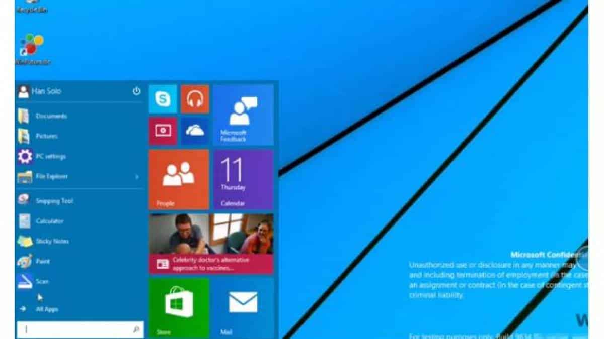

Uso de aplicativos móveis mais que dobrou em 2013
 O uso de aplicativos em dispositivos móveis mais que dobrou no último ano,
alcançando uma taxa de 115%, de acordo com números da Flurry. Nenhum segmento
apresentou queda de uso.
O uso de aplicativos em dispositivos móveis mais que dobrou no último ano,
alcançando uma taxa de 115%, de acordo com números da Flurry. Nenhum segmento
apresentou queda de uso.
A categoria que mais cresceu foi a de apps sociais e para troca de mensagens,
como WhatsApp, WeChat, Facebook Messenger... Eles apresentaram alta de 203% durante o
período. Depois aparecem os de utilidades e produtividade, com alta de 149%. Os dois
segmentos, como se vê, tiveram resultados melhores que a média geral de 115%.
Qual é a hora certa para apresentas as crianças à tecnologia?
Apesar da diferença de idade, a Laura e o Gabriel têm muito em comum. Além de inteligentes, super espertos e hiperativos, os dois nasceram imersos em tecnologia. A Laura já tem 10 anos, mas teve seu primeiro contato com tablets e smartphones antes de completar dois anos de idade; o Gabriel ainda só tem três, mas também já aprendeu há algum tempo as artimanhas das telas sensíveis ao toque e até dos teclados...
Rumor: Windows 9 será lançado em abril de 2015
 O Windows 9 será lançado em abril do próximo ano e virá com uma série de novidades - dentre as quais, a volta informações que chegaram a Paul Thurrott, dono de um site só sobre notícias relacionadas ao sistema operacional da Microsoft. Em abril de 2013 a empresa fará sua conferência BUILD, em que geralmente apresenta uma prévia da próxima versão do Windows. Desta vez, ao invés de fazer isso, a companhia lançará o Windows 8.1 Update 1 e o Windows Phone 8.1.